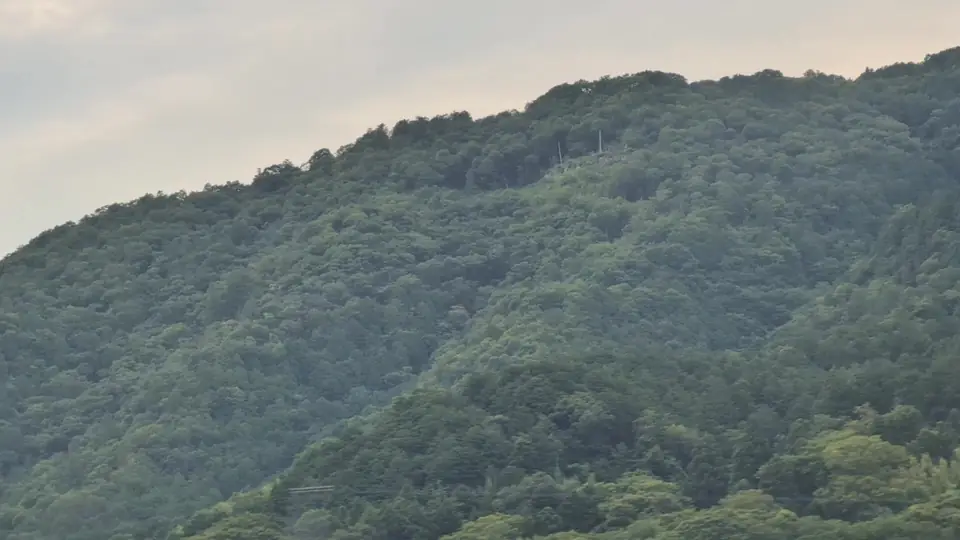
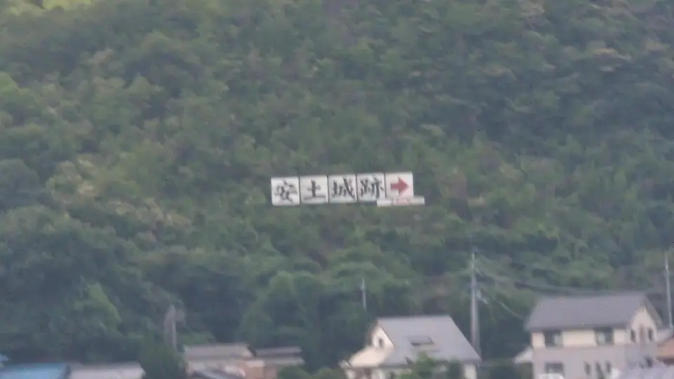

- Section
- Maibara → Kyoto
- Seat side
- Seat E · mountain side
- Timing
- About 120 minutes after leaving Tokyo on a Nozomi train
- Photos
- 3 photos
What is Kannonji Castle, and why is it famous?
Kannonji Castle stood on Mt. Kinugasa (432 m) in what is now Omihachiman, Shiga Prefecture. Its origins are traced to the Nanboku-cho and Muromachi periods; from then on, the Rokkaku clan — a branch of the Sasaki family, itself descended from the Minamoto — developed it as its principal seat. Ridges and valleys across the entire mountain were faced with stone walls and organized into countless enclosures (kuruwa), making Kannonji one of the largest medieval-Sengoku mountain castles in Japan. It is listed among the '100 Fine Castles of Japan' and shares the mountain with the temples Kannonshoji and Kuwanomidera, giving it a religious dimension as well.
More: Wikipedia: Kannonji CastleOmihachiman Tourism: Kannonji Castle Ruins (Japanese only)
If you are traveling from Tokyo toward Shin-Osaka, start watching the Seat E · mountain side window as you approach Maibara → Kyoto. If you are traveling toward Tokyo, the order is reversed.
Nobunaga, Kannonji, and Azuchi
Kannonji Castle is best known for its role in Oda Nobunaga's advance on Kyoto. In 1568, escorting the future shogun Ashikaga Yoshiaki, Nobunaga demanded the surrender of the Rokkaku in southern Omi; they refused. His forces then took the subordinate Mitsukuri Castle in a single day. Shocked by the speed of the attack, Rokkaku Yoshikata and his son Yoshiharu abandoned Kannonji and fled toward Koga. The Rokkaku hold over southern Omi effectively ended without a real defense.
The following year, 1569, Nobunaga began building Azuchi Castle on the Lake Biwa shore just northwest of Mt. Kinugasa — a symbol of the new era he was forging. Seen from the train, this landscape holds two chapters of history stacked side by side: the huge mountain castle of the old order, and the new-age lakeside castle that displaced it. Knowing that 'Azuchi Castle is right behind Kannonji' changes how the window reads.
Today, remnants of stone walls and enclosures are scattered along the ridges, and Kannonshoji at the foot of the mountain can be reached on foot or by taxi. The site is a Nationally Designated Historic Site, and preservation and archaeological work continue.
Location at a glance
Open mapSwitch between the spot and the Shinkansen viewpoint.
How to catch Kannonji Castle Ruins
1. Choose the window first
As you approach Maibara → Kyoto, start watching from Seat E · mountain side. Use Live Guide while riding, or the map on this page before you board.
The clearest view lasts only a few seconds. Decide the seat side and window direction before it arrives rather than reaching for your camera late.
2. Highlights
Around Azuchi, look toward Seat E for a mountain that is 'clearly bigger and longer-shouldered' than its neighbors on the plain. There is no keep or sign, but the ridge itself is the castle site. Simply knowing that the mountain once *was* the fortress changes the meaning of the window.
Kannonji Castle Ruins in photos


 Related
Sawayama Castle Ruins
Related
Sawayama Castle Ruins
 Related
FUJITEC Big Wing
Related
FUJITEC Big Wing
 Related
Seta no Karahashi Bridge
Related
Seta no Karahashi Bridge